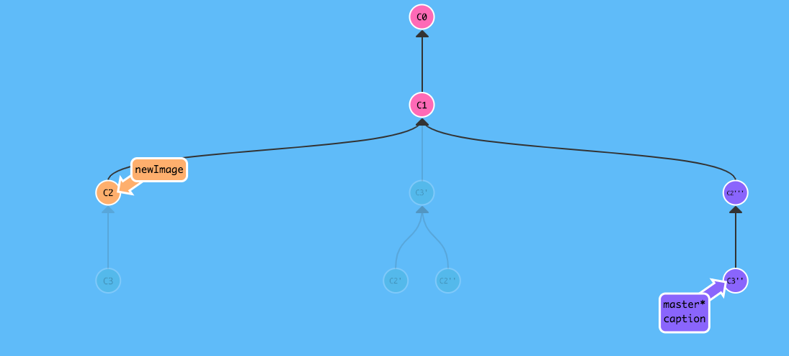
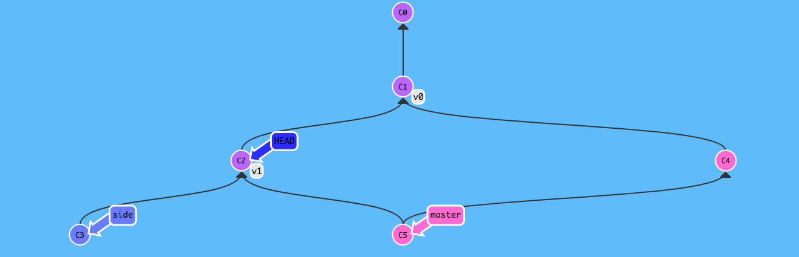

分离HEAD
HEAD是一个对当前检出记录的符号引用，也就是指向你正在其基础上进行工作的提交记录。
HEAD总是指向当前分支上最近一次提交记录。
分离的HEAD就是让其指向了某个具体的提交记录而不是分支名，使用git checkout x实现。
相对引用
相对引用让我们可以避免直接使用哈希值去指定提交记录，常用的有：
- 使用
^向上移动1个提交记录 - 使用
~<num>向上移动多个提交记录
撤销变更
Git Reset
git reset通过把分支记录回退几个提交记录来实现撤销改动。你可以将这想象成“改写历史”。git reset向上移动分支，原来指向的提交记录就跟从来没有提交过一样。
只对本地分支有效。
Git Revert
生成一个和当前提交完全相反的提交，来达到撤销的目的，适用于远程。
自由修改提交树
Git Cherry-pick
git cherry-pick <提交号>...实在是很简单。。。
Git Rebase
当你知道你所需要的提交记录（并且还知道这些提交记录的哈希值）时, 用cherry-pick再好不过了。但是很乱的时候，就可以用交互式的git rebase来解决，帮你从一系列的提交中找到你想要的。
交互式rebase指的是使用带参数--interactive的rebase命令, 简写为-i
参数详情待添加，平时git rebase -i之后-f参数用得最多。
提交的技巧
Git Rebase
假设我们在newImage分支上进行一次提交，然后又基于它创建了cpation分支，然后又提交了一次，这个时候我们想对之前的提交记录有一些小小的调整，emmm还是很常见的，我们可以这么来1
2
3
4 git rebase -i HEAD~2
git commit --amend
git rebase -i HEAD~2
git rebase caption maste

Git Cherry-pick
当然我们也可以直接使用git cherry-pick xxx达到我们的目的。
Git Tags
分支很容易被人为移动，且当有新的提交时，它也会移动。Tags便是永远指向某个提交的标识。
1 | git checkout c1 |

Git Describe
由于标签在代码库中有“锚点”的作用，Git设计了git describe的命令来描述离标签最近的点。
pass